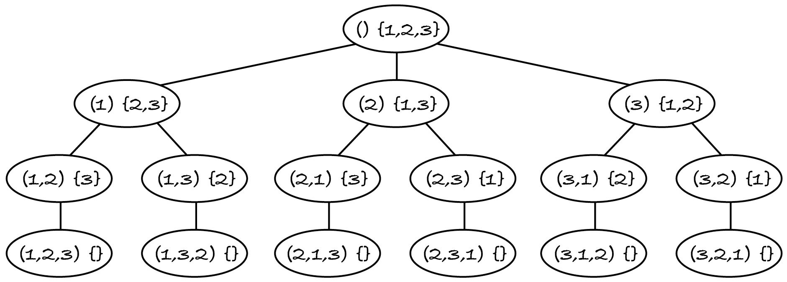

22.1. Generate sequences
Backtracking can solve many constraint satisfaction and optimisation problems. In M269 we restrict backtracking to problems on sets of items or on sequences of unique items, i.e. without duplicates. We will first look at constraint satisfaction problems on sequences. Here’s one, admittedly contrived.
Given an integer n > 2, obtain all permutations of 1, …, n such that:
the first and last numbers are at least n / 2 apart (range constraint)
the sequence starts with an odd number and then alternates even and odd numbers (parity constraint).
For n = 3, only permutations (1, 2, 3) and (3, 2, 1) satisfy both constraints. Permutations like (2, 1, 3) satisfy neither:
the difference between the first and last numbers is 1, but it should be at least 1.5
the permutation starts with an even number and has consecutive odd numbers.
I first solve the problem with a recursive exhaustive search, because backtracking is based on that.
A brute-force search for the solutions to the above problem generates all possible permutations and tests each permutation against both constraints, to decide if it’s a solution.
To test the range constraint I compute the difference between the first and last numbers with Python function abs, introduced in Section 18.2.
[1]:
def satisfies_range(numbers: list, n: int) -> bool:
"""Check if first and last of numbers are at least n/2 apart.
Preconditions:
- numbers is a list of integers; len(numbers) >= 2
- n > 2
"""
return abs(numbers[0] - numbers[-1]) >= n / 2
To test the parity constraint, I must verify there’s an odd number at index 0, an even number at index 1, an odd number at index 2, etc. The general rule is that each number and its index must have different parities. If there are no numbers (the list is empty) then the constraint is satisfied.
[2]:
def satisfies_parity(numbers: list) -> bool:
"""Check if numbers is an odd, even, odd, ... sequence.
Preconditions: numbers is a list of integers
"""
for index in range(len(numbers)):
if index % 2 == numbers[index] % 2:
return False
return True
The test for whether a permutation candidate is a solution is simply:
[3]:
def is_solution(permutation: list, n: int) -> bool:
"""Check if permutation satisfies the range and parity constraints.
Preconditions: n > 2 and permutation is a rearrangement of 1, ..., n
"""
return satisfies_range(permutation, n) and satisfies_parity(permutation)
Now all that remains is to generate the permutations. This could be done iteratively with Python’s permutations function introduced in Section 11.4.4. However, backtracking requires each permutation to be generated one item at a time. (I’ll explain why in Section 2.) We need a different way of generating permutations.
22.1.1. Recursive generation
To generate one permutation with pencil and paper, we could start with an empty sequence and take the numbers one by one, in any order, from the set {1, …, n}, appending each one to the sequence. When the set becomes empty, the sequence is a permutation of the numbers from 1 to n.
To generate all permutations, we need to systematically go back to an earlier choice (e.g. when we picked the first number in the permutation) and make a different one.
The following tree shows the decision process for n = 3. Each node represents the sequence created so far and the available set of choices. Initially the sequence is empty and all numbers are available. The children of a node are all the possible ways of extending the sequence in that node. When the set is empty, the sequence can’t be further extended. Nodes with the empty set are the leaves of the tree and contain the permutations.
The sequences in the leaves are the complete candidates, which for this problem are the permutations. The sequences in the other nodes are the partial candidates. Each set in a node is the extensions for that node’s candidate. A candidate is complete when it has no extensions. A solution is a complete or partial candidate that satisfies the constraints. For this problem, all solutions are complete candidates (permutations). Because of the constraints imposed, not every complete candidate is a solution.
Since the candidates can be organised in a tree, all we need to generate them is a recursive tree-traversal algorithm. The algorithms in Chapter 16 went through an existing tree. It would be a waste of time and memory to create the whole tree in advance, with the partial candidates and their extensions, as we’re only interested in those complete candidates that are solutions. A better approach is to create the nodes as they’re visited. In fact, we don’t need to create node objects with pointers to children: we only need the content of nodes (the candidates and their extensions), which is much simpler and efficient.
The following is a recursive exhaustive search. It generates all partial and complete candidates and their extensions, and tests complete candidates (the permutations) against the constraints. If the permutation is a solution then it’s appended to a sequence of solutions, so that we keep the solutions in the order they’re found. I’ve also added some print statements to follow what the search does.
[4]:
def extend(candidate: list, extensions: set, n: int, solutions: list) -> None:
"""Add to solutions all valid permutations that extend candidate.
Preconditions: n > 2 and
- candidate is a list of integers between 1 and n
- extensions is a set of integers between 1 and n
- candidate and extensions have no integer in common
"""
print("Visiting node", candidate, extensions)
if len(extensions) == 0: # leaf node: candidate is complete
print("Testing candidate", candidate)
if is_solution(candidate, n):
solutions.append(candidate)
else: # create and visit children nodes
for item in extensions:
extend(candidate + [item], extensions - {item}, n, solutions)
Like all recursive algorithms, it has a base case (there are no extensions) and a reduction step (remove one item from the extensions) to make progress towards the base case.
Being a tree-traversal function, I must call it on the root node: the empty candidate and the full set of extensions. I must also initialise the solutions sequence.
[5]:
def valid_permutations(n: int) -> list:
"""Return all valid permutations of 1, ..., n in the order generated."""
candidate = []
extensions = set(range(1, n + 1)) # {1, ..., n}
solutions = []
extend(candidate, extensions, n, solutions)
return solutions
print("Solutions:", valid_permutations(3))
Visiting node [] {1, 2, 3}
Visiting node [1] {2, 3}
Visiting node [1, 2] {3}
Visiting node [1, 2, 3] set()
Testing candidate [1, 2, 3]
Visiting node [1, 3] {2}
Visiting node [1, 3, 2] set()
Testing candidate [1, 3, 2]
Visiting node [2] {1, 3}
Visiting node [2, 1] {3}
Visiting node [2, 1, 3] set()
Testing candidate [2, 1, 3]
Visiting node [2, 3] {1}
Visiting node [2, 3, 1] set()
Testing candidate [2, 3, 1]
Visiting node [3] {1, 2}
Visiting node [3, 1] {2}
Visiting node [3, 1, 2] set()
Testing candidate [3, 1, 2]
Visiting node [3, 2] {1}
Visiting node [3, 2, 1] set()
Testing candidate [3, 2, 1]
Solutions: [[1, 2, 3], [3, 2, 1]]
As you can see, the algorithm tests all 3! = 6 permutations of numbers 1 to 3, but only two of them are solutions.
If you follow the nodes visited with your finger on the tree diagram, you see that the algorithm is doing a pre-order traversal of the tree. After visiting a leaf and testing the complete candidate in it, the algorithm ‘unwinds’ (because leaves have no children) to the last node with yet unvisited subtrees and traverses the next subtree.
For example, if you look at the printed output and at the tree diagram, after producing permutation [1, 3, 2], there are no further subtrees to explore for partial candidate [1]. The execution of the algorithm is back in the for-loop of the call on the root node extend([], {1,2,3}, 3, solutions) and goes into the next iteration, with item being 2. The next recursive call is extend([2], {1, 3}, 3, solutions), which starts traversing the middle subtree.
At this point you may be rightly thinking that this recursive brute-force search is less efficient than an iterative one, because it also generates and visits all partial candidates as the initially empty candidate is extended one item at a time. For n = 3, there are 10 partial and only 6 complete candidates.
One advantage of the incremental generation approach is that it can also solve problems where the solution sequences don’t have all items, i.e. where some partial candidates are solutions too.
22.1.2. Accept partial candidates
Let’s change the problem so that solutions can be sequences with only some of the numbers from 1 to n, as long as they satisfy both constraints. All permutations satisfying the range and parity constraints are still solutions, but shorter sequences may be solutions too. For example, for n = 4, (1, 2, 3, 4) is the only permutation that is a solution, but sequences (1, 2, 3) and (3, 2, 1) are solutions too: they each have a difference of at least 4 / 2 = 2 between the first and last numbers and they alternate odd and even numbers.
To solve this problem I must make two changes. First, the tree traversal must check every candidate, not just the complete candidates. (I don’t repeat the docstring and print statements.)
[6]:
def extend(candidate: list, extensions: set, n: int, solutions: list) -> None: # noqa: D103
if is_solution(candidate, n):
solutions.append(candidate)
for item in extensions:
extend(candidate + [item], extensions - {item}, n, solutions)
The change I made was removing the if-else statement that checked if the candidate is complete. The for-loop won’t do anything for complete candidates because they have no extensions.
The second change is to the function that tests the range constraint, which requires the sequence to have at least two numbers. Previously, we could assume that as part of the preconditions, because only complete candidates (permutations of n > 2) were tested. Now that we test all partial candidates, we must explicitly check they have at least two numbers.
[7]:
def satisfies_range(numbers: list, n: int) -> bool:
"""Check if first and last of numbers are at least n/2 apart.
Preconditions: numbers is a list of integers; n > 2
"""
return len(numbers) > 1 and abs(numbers[0] - numbers[-1]) >= n / 2
Let’s confirm that we now find more sequences for n = 4.
[8]:
valid_permutations(4)
[8]:
[[1, 2, 3], [1, 2, 3, 4], [1, 4], [1, 4, 3], [3, 2, 1], [3, 4, 1]]
To sum up, a constraint satisfaction problem on sequences with unique items can be solved with a brute-force search that generates all candidates in a recursive and incremental way, starting from the empty sequence and extending it by one item at a time. Depending on the problem, all candidates or only the complete ones are tested against the constraints.
The next section shows the main advantage of incremental generation: a simple change will make the search much more efficient.